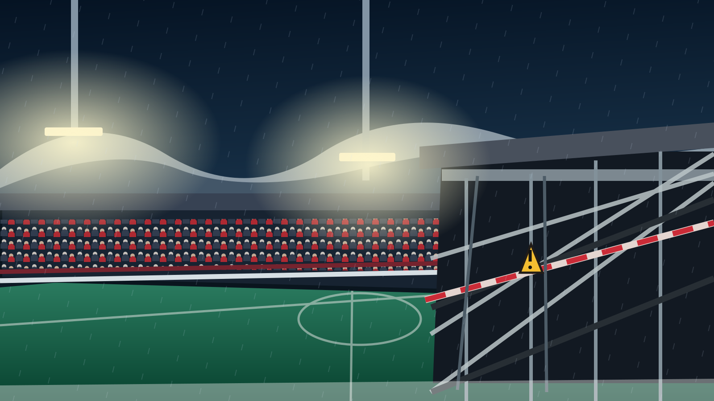

REDAKSJONELT UTKAST – arkivkopi av publisert sak
Sport · Nyheter · 9. november 2026
Tribunen ga etter i Tromsø – var kontrollert bare dager før
To Bodø/Glimt-supportere falt gjennom bortetribunen på Romssa Arena. Én ble sendt til sykehus med ribbeinsbrudd. Tribunen var sjekket få dager før kampen, og politiet innhenter nå dokumentasjon.

Dramatisk avbrudd
Det som skulle være et intenst nordnorsk derby mellom Tromsø og Bodø/Glimt, ble preget av en alvorlig hendelse på tribunen søndag 8. november. Etter rundt 40 minutter ga en del av bortetribunen etter mens supportere sto samlet. To personer falt gjennom gulvet.
Bodø/Glimts keeper Nikita Haikin varslet dommer Ola Hobber Nilsen, som stanset spillet. Lagene gikk i garderobene, og bortesupporterne ble evakuert mens nødetatene undersøkte området.
Én supporter sendt til sykehus
Fire personer ble undersøkt av helsepersonell, og én ble sendt til sykehus. Den skadde er den 25 år gamle Bodø/Glimt-supporteren Sigurd Støver, som ifølge NRK og VG pådro seg ribbeinsbrudd. Flere tilskuere beskrev kaotiske scener og frykt for at mer av tribunen skulle svikte.
De to som falt gjennom tribunen, er ifølge VG brødre. Opplysningene om ribbeinsbruddet ble kjent etter at kampen var over.
Kontrollert før kampen
Bare dager før ulykken hadde Tromsø gjennomført en rutinekontroll av tribunen. Norges Fotballforbund og Norsk Toppfotball hadde bedt klubbene gå gjennom stadionanleggene, særlig supporterområder utsatt for høyt publikumspress. Tromsø meldte tilbake at kontrollen var gjennomført.
Daglig leder William Frantzen bekreftet overfor VG at tribunen var godkjent for bruk. Hvorfor gulvet likevel ga etter, er ennå ikke fastslått. En gjennomført kontroll er ikke det samme som at årsaken til ulykken er kjent.
Politiet vil undersøke dokumentasjonen
Politiet opplyste mandag 9. november at det er opprettet en undersøkelsessak, ikke en straffesak. Politiet vil blant annet innhente dokumentasjon fra den nylige tribunesjekken og snakke med de involverte og Tromsø-ledelsen før det tas stilling til om det er grunnlag for etterforskning.
NFF har varslet en gjennomgang av rutinene for tribunesikkerhet. Det berørte supporterfeltet kan ikke tas i bruk igjen før nødvendige tiltak og godkjenning foreligger.
Bodø/Glimt vant 2–0
Kampen fortsatte etter et avbrudd på om lag tre kvarter. Ola Brynhildsen scoret begge målene da Bodø/Glimt vant 2–0 i Tromsø. Resultatet hadde betydning i kampen om seriegullet, men ble overskygget av det som skjedde med publikum.
Fotballsupportere må kunne stå, synge og hoppe uten å risikere å falle gjennom tribunen. Nå må de videre undersøkelsene gi svar på hvordan dette kunne skje på en arena som nylig var kontrollert.
Kilder og dokumentasjon
- NRK – Sendt til sykehus etter tribunedramatikk
- VG – Tromsø bekrefter at bortetribunen var kontrollert
- VG – Politiet vil avhøre TIL-ledelsen
- Associated Press – Stand gives way during Norwegian soccer game
Publisert 9. november 2026. Status hos politiet er oppdatert etter presiseringen om undersøkelsessak denne dagen.